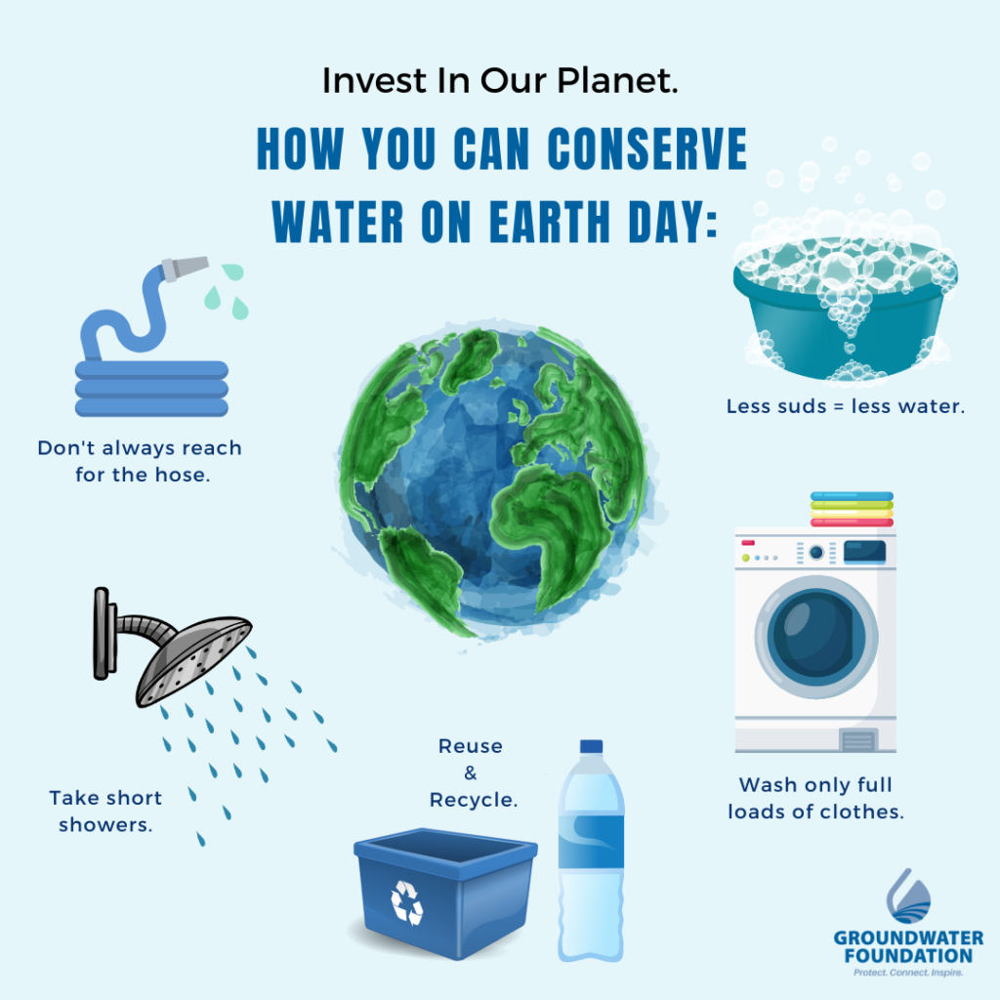

ABOUT WATER
A water diet, also known as water fasting, involves consuming only water for a set period, typically 24-72 hours,
without any food intake. It's often pursued for potential health benefits or weight loss, but it's crucial to
approach it with caution and under medical supervision, especially for individuals with underlying health conditions.
Here's a more detailed look:

Potential Benefits:
Weight Loss:
Water fasting can lead to quick weight loss due to calorie restriction.
Autophagy:
It may promote autophagy, a cellular process that can help recycle old or damaged cell components and potentially protect against certain diseases.
Immune System Boost:
Some studies suggest it may trigger the immune system to produce new white blood cells.
Blood Pressure Lowering:
Extended water fasting, when medically supervised, may help lower blood pressure.
Improved Insulin and Leptin Sensitivity:
It may improve the body's sensitivity to insulin and leptin, hormones that regulate metabolism.
Potential Risks:
Dehydration:
Water fasting can lead to dehydration, especially if not properly monitored.
Muscle Loss:
The body may break down muscle tissue for energy during prolonged fasting.
Nutritional Deficiencies:
Fasting for an extended period can lead to deficiencies in essential vitamins and minerals.
Low Energy and Impaired Cognitive Function: Fasting can cause fatigue and reduce mental sharpness.
Eating Disorders:
It can trigger or worsen eating disorders.
Orthostatic Hypotension:
A sudden drop in blood pressure upon standing can occur, potentially leading to dizziness or fainting.
Important Considerations:
Consult a Healthcare Professional:
Always consult with a doctor or qualified healthcare professional before starting any type of fast, especially if you have any underlying medical conditions.
Proper Preparation:
Consider preparing for a fast by eating smaller meals the day before or practicing intermittent fasting.
Listen to Your Body:
Pay attention to your body's signals and stop fasting if you experience any adverse symptoms.
Hydration:
Drink plenty of water throughout the fast, even if you're not hungry.
Not Suitable for Everyone:
Water fasting may not be appropriate for individuals with certain medical conditions, including diabetes, low blood pressure, and eating disorders.